足力健老人鞋案例解析华与华既是产品的品牌管家，也是企业的战略管家！产品要抓住顾客的痛点，而企业战略要抓住社会的痛点！2015 年，张京康先生以 5000 元的起始资金，创立了足力健老人鞋品牌。在 2017 年 3月的时候，足力健年销售额才 5000 万元，也是在那一个月，足力健创始人张京康先生找到了华与华。双方会面结束时，张总就对我们说，“你们就等着我，马上就签约！”随后，足力健与华与华签订了年度战略合作协议。如今，华与华已经为足力健服务了3 年.华与华是企业“战略营销品牌终身顾问”，华与华=战略咨询公司+产品开发公司+广告公司。本期文章，你将学习到华与华的战略观点是如何在足力健老人鞋品牌上深度实践的。
华与华战略观点总结如下：1 、企业降低交易成本2 、企业解决社会问题3 、创新经营活动组合在足力健老人鞋品牌上的具体实践主要表现为 3 个方面：1 、制定企业战略：企业战略不是企业的战略，而是企业为解决某一社会问题，为社会制定的战略。2 、落地企业战略：战略定位的实质是一套独特的经营活动，带来差异化的价值、总成本领先和竞争对手难以模仿。3 、重新想象战略：企业战略是动态的，我们制定一个战略，管到制定下一个战略为止。
1制定战略企业为社会解决问题什么是企业？企业是社会的器官。任何一个组织机构都是为了某种特殊目的、使命和某种特殊的社会职能而存在的；任何企业得以生存，都是因为它满足了社会某一方面的需要，实现了某种特殊的社会目的。企业的本质是什么？企业的本质是为社会解决问题，一个社会问题就是一个商业机会。一个巨大的社会问题就是一个巨大的商业机会。因此企业战略不是企业的战略，而是企业为解决某一社会问题，为社会制定的战略。
以华与华的知名案例 360 为例：2012 年，华与华和 360 开始品牌战略营销咨询合作，华与华为 360 提出转型互联网安全、“保护中国互联网安全”的企业战略，重新设计了 360 的业务组合和产品结构。
奇安信的前身为 360 企业安全集团， 2019 年 4 月开始以独立品牌发展。 5 月 10 日，中国电子信息产业集团以 37 . 3 亿战略入股成为第二大股东，奇安信正式成为网络安全“国家队”。
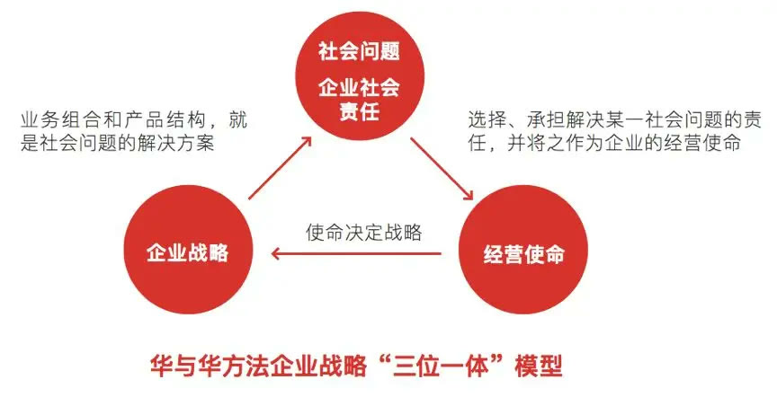
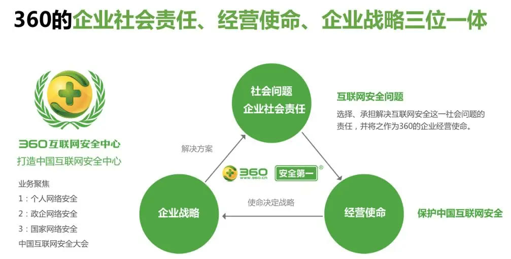
为足力健制定企业战略1 ）第一步：找到社会问题张总通过前期的研究，发现了一个巨大的社会问题——老人穿鞋难。
▲首届中国老年足部健康高峰论坛暨足部健康关爱工程启动仪式
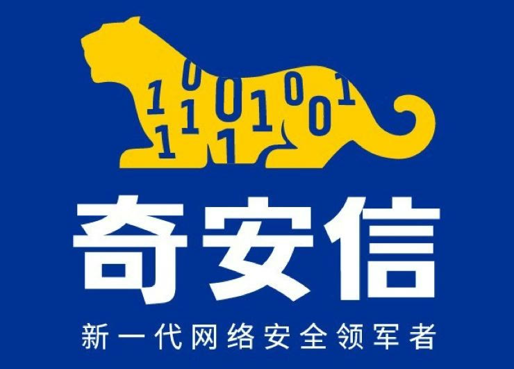
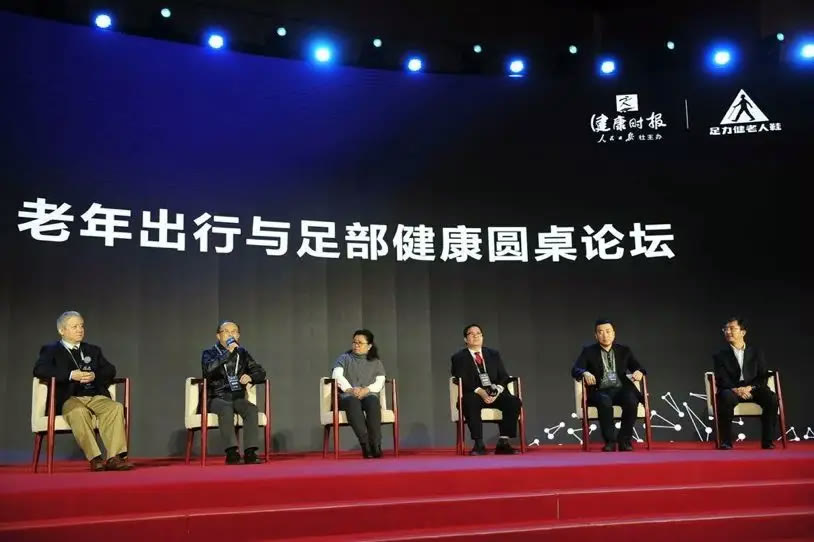
根据 2018 年《健康时报》足部科学研究院发布的《中国老年人出行与足部健康调研报告》显示，“ 89 %的老年人都存在不同程度的足部疾病。”“ 老年人因身体健康状况原因导致不愿意或不能出门的占比达 31 %，其中有 73 %的人由于腿脚疼痛。”与此同时，老年人常见的有 8 大足部健康问题，这些情况直接导致了老人穿鞋难，但是长期以来，这个问题却没有得到足够的重视和有效的解决。
▲老年人常见的 8 大足部健康问题
发现了老人穿鞋难的社会问题，足力健将承担解决这一问题的社会分工，作为自己企业的社会责任。因此，“解决老人穿鞋难”，就成为了足力健的企业社会责任！2 ）第二步：责任就是使命将“解决老人穿鞋难”作为足力健企业社会责任之后，华与华提出足力健的使命——“让每一位老人都穿上专业老人鞋”。在这里很多人可能有疑问，为什么不是“让每一位老人都穿上足力健呢？”这样不是对企业更有利吗？因为战略观就是价值观，我们的最终目的是承担社会责任，解决社会问题。每一位老人都需要“专业老人鞋”，而不是“足力健”。企业要站在为社会制定战略的高度，做到“无我”，真正去思考怎么解决社会问题。3 ）第三步：使命决定战略战略是一套业务组合和产品结构，足力健确定了“让每一位老人都穿上专业老人鞋”的使命，那么接下来我们所有产品和服务，都是围绕这个使命来制定。华与华帮助足力健制定了它的事业理论：发现一个社会问题——老人穿鞋难，将解决这个社会问题作为足力健企业社会责任，从而制定了“让每一位老人都穿上专业老人鞋”的企业使命，最后再通过一系列产品和服务，提供这个社会问题的解决方案。
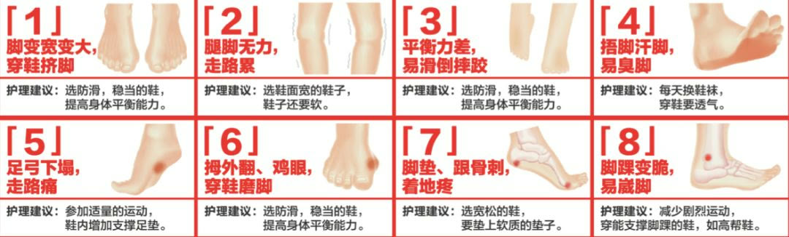
2落地战略建立一套独特的经营活动“竞争战略之父”迈克尔·波特在其著作《什么是战略》中提到：“战略定位的实质是选择一套与竞争对手不同的经营活动，以创造差异化的价值。”这能带来 3 个结果：① 独特的价值。② 总成本领先。③ 竞争对手难以模仿。足力健老人鞋张总提出“天花板战略”，随之建立起了一整套独特的经营活动：足力健老人鞋独特的经营活动1 ）独特的产品科学足力健致力于提供好穿、舒适、不贵的老人鞋，满足老年人一年四季和不同功能场景下的穿鞋体验。为什么说足力健专业，是因为每一款产品都是专为老人脚型设计：·鲶鱼头鞋型，宽松舒适不挤脚。·足力健鞋前加宽，鞋腰加高，放大鞋内空间。·老年人脚踝脆弱，元宝鞋帮可以保护脚踝。
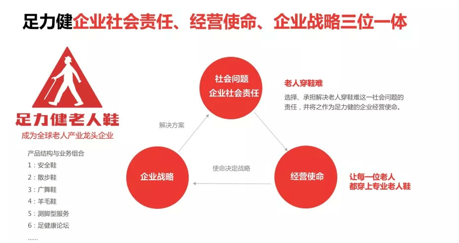
·防滑鞋底，大花纹设计，让老年人走路不易滑……所有的功能设计都是在满足老年人需求，解决老年人痛点。
▲足力健加绒安全鞋2 ）免费测脚型服务我们意识到，足力健要承担起“解决老人穿鞋难”的社会问题，必然要为消费者提供“足部健康科学知识”。当发生足部健康问题时，人的脚型会随之发生变化，年轻时选择的鞋码就不再适合老年时的脚部情况了。分享一个故事：华与华董事长华杉的干妈，有大脚骨的足部问题，造成脚部变宽。原来穿 37 码的鞋子，在选择足力健时 36 码的就够了，因为我们的产品鞋头加宽，内部空间大，正好适合大脚骨的情况。
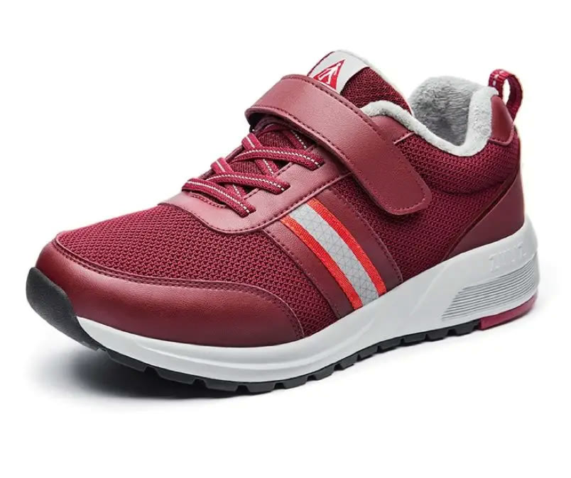
同时，华与华协助足力健创意了 “老人选鞋有方法，先测脚型再选码”的测脚型活动，教育老年消费者“先测脚型再选码”的专业选鞋法。让更多老年人学到足部健康科学知识，了解自己的脚型，选择适合自己的鞋款。
▲消费者排队测脚型3 ）渠道转型：开大店和直营店刚刚打开市场的足力健，主要渠道是超市。随着门店的快速扩张和品牌认知度的提高，超市客群逐渐成为存量市场，寻找新的增量成为了急迫的任务。华与华提出“从超市小店走向街边大店”的渠道策略建议，打开了新的流量，扩大了消费人群。门店走向街边后，让越来越多的中青年看到了足力健品牌。
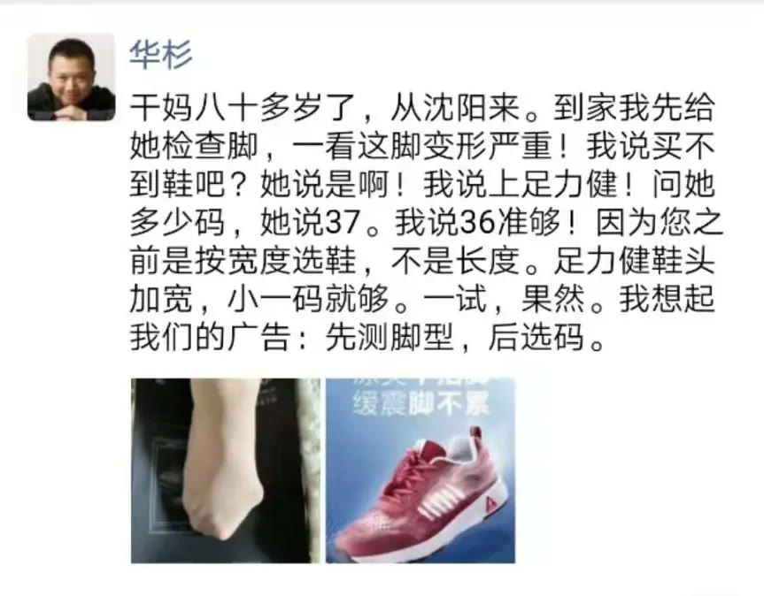
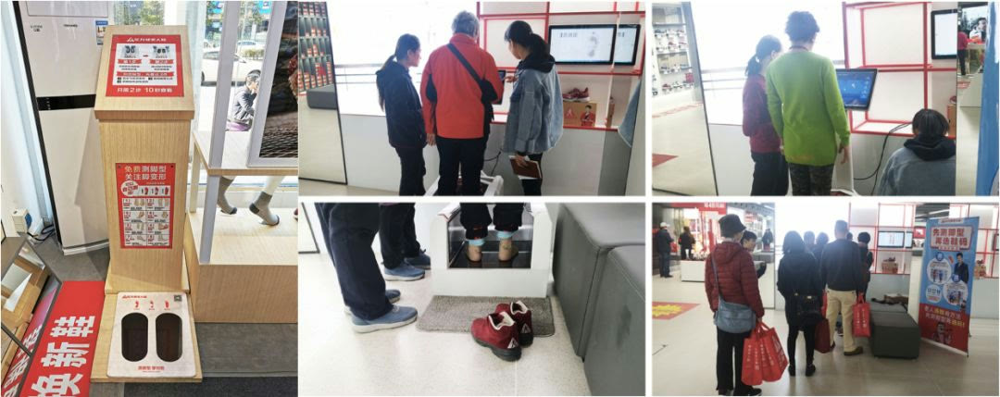
与此同时，足力健全力投入直营门店事业， 1 年时间，直营门店数量就从 100 家扩张到近千家，在提升整体门店品质与业绩的同时，大大降低企业交易成本。
▲足力健新街边店
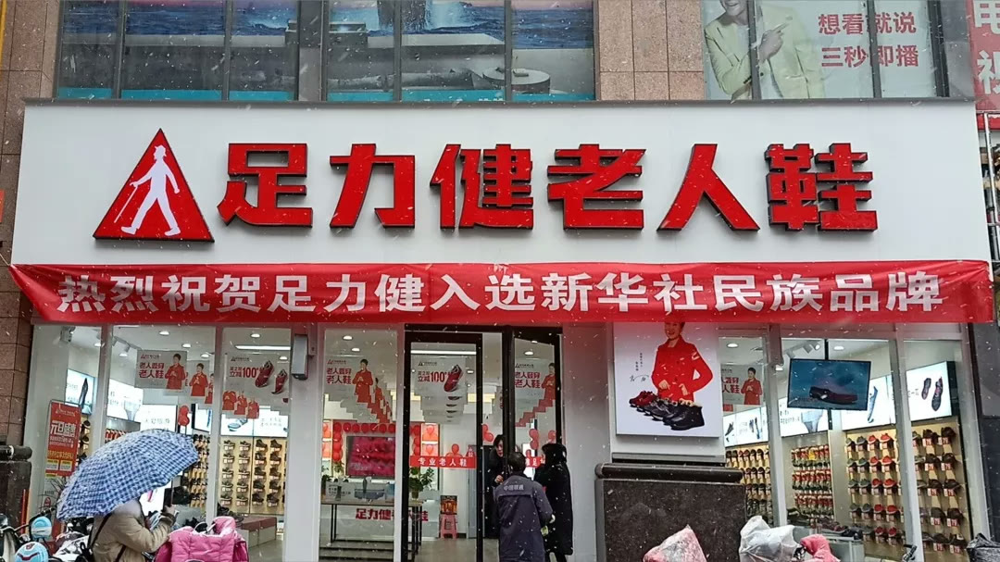
▲足力健北京王府井旗舰店
4 ）少款多量 自主投产不同于快时尚品牌，足力健老人鞋的产品是功能性的。这就和走“款多量少”模式的快时尚品牌不同，足力健核心产品系列少而精，但每一款产品的出货量是巨大的。通过自主投产的模式，足力健能够严格把控每一个生产细节，保证产品品质，最大化降低生产成本。5 ）低价策略 阻挡新进入者定价定生死！为什么小米能成功？——因为苹果定价太高，如果一开始苹果就定价很低，那就不会有后来的小米和华为。
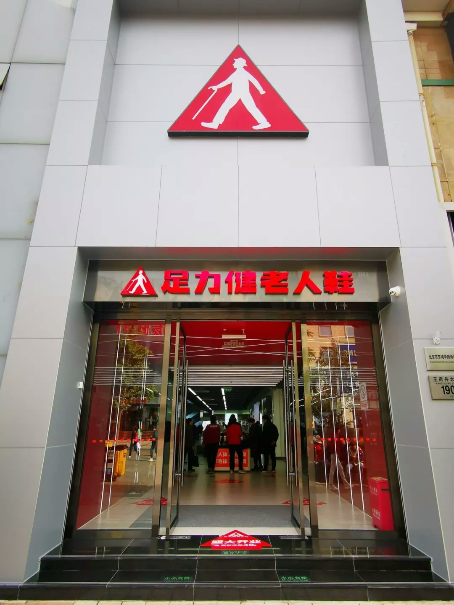
足力健在生产端建立了成本优势后，在销售端采取了低价策略，最低 49 元就能买到一双专业老人鞋，既让利给消费者，又形成了巨大的竞争优势，有效阻挡了新进入者的威胁。6 ）压倒性广告投入足力健老人鞋每年都斥资数亿，在央视打广告。不是一年，而是上去了就不下来，日日不断，滴水穿石。
▲足力健央视广告
简单的定位容易被模仿，但一套独特的经营活动组合是别人难以模仿的。独特的产品科学、免费测脚型服务、直营店与大店的渠道转型、自主投产、压倒性广告投入、低价策略、足力健通过这套经营活动，形成了自己的独特价值，获得了差异化和总成本的同时领先，实现让利消费者，让竞争对手难以模仿。
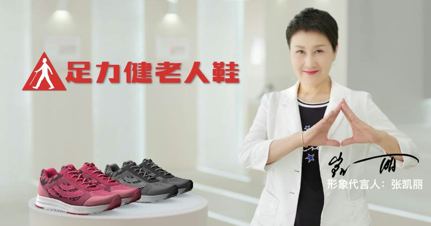
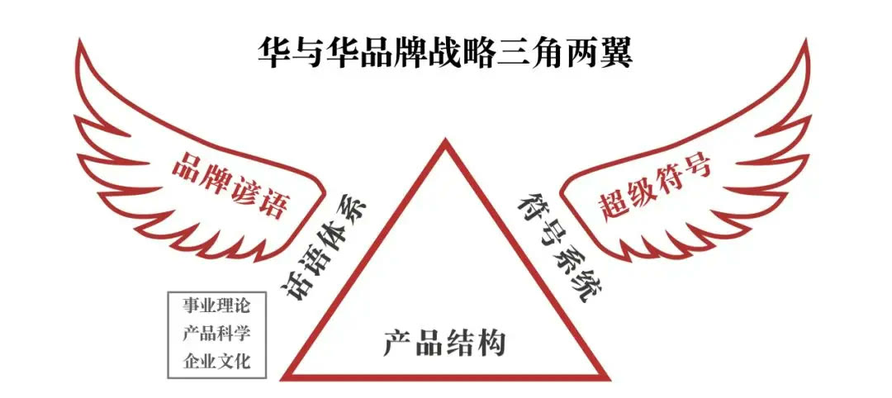
华与华帮助足力健制定了它的事业理论——从发现“老人穿鞋难”的社会问题到提供解决方案，建立了“专业”的产品科学和企业文化，至此，华与华又帮助足力健制定品牌战略和营销活动！足力健老人鞋品牌战略和营销活动1 ）超级符号
▲足力健原 LOGO
上图是足力健的原 LOGO ，这样一个抽象的 LOGO 存在不易被识别、记忆和传播的缺点，最重要的是缺少品类信息！第一次看到的人根本不知道这个品牌是做什么的。而我们则是要为品牌打造出一个全世界人人都认识的超级符号！并在符号和命名中直接体现品类，最大化降低足力健的品牌营销传播成本和消费者的选择成本。超级符号是人人都看得懂的符号，并且人人都按照它的指引行事的符号，人们甚至都不会去思考它为什么存在，只要一看见这符号，就会听它的话。
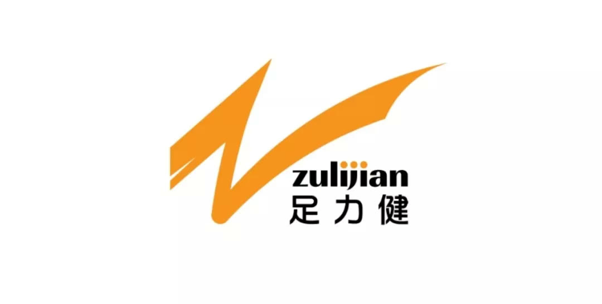
▲足力健超级符号
这是我们为足力健设计的全新超级符号：红色的三角形边框内，有一位正在行走的老人。底部则是品牌名——足力健老人鞋。为什么要设计这样一个符号？①以消费者为中心 放大品牌戏剧性我们的消费者是老人，结合产品稳定、防滑等特点，我们创造了一个这样的老人形象：
我们让符号中的老人头戴绅士帽，手持文明杖，大步向前走，呈现出积极健康的、乐观向上的精神状态，这才是我们心目中老人的理想形象，也是足力健产品想带给消费者的舒适体验。
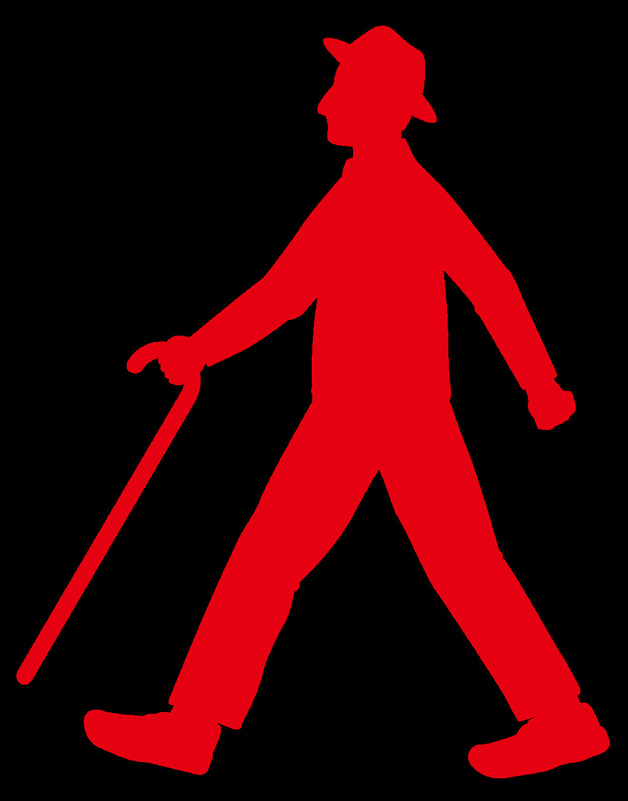
通过动作和细节道具的设计，一下子就放大了足力健品牌与生俱来的戏剧性，也拉近了品牌与消费者之间的距离。②世界级文化母体 为品牌注入原力有了老人形象还不够，我们还找到了一个世界级的文化母体——三角形。三角形具有稳固的结构特征，也被广泛应用在城市交通标志牌的设计中。
▲全世界通用的三角公共符号
据此，我们为足力健设计了一个醒目的红色三角形外框。用这个人人都认识的形象，提升符号的熟悉感和品牌的发现感，让全世界消费者都能够识别和记住。
▲红色三角形 发现感极强
③命名直接体现品类命名就是成本，命名就是召唤，命名就是投资。我们直接把“老人鞋”三个字加入到品牌名中，从“足力健”到“足力健老人鞋”，让品类信息一目了然！命名之后，符号也要体现品类！我们在符号设计中也加入“老人鞋”，
让日后每一次名字和符号的传播，都在巩固和占领品类基础，实现品牌和品类的统一。在字体设计上，我们还放大加粗了品牌名，尤其是增粗了底部笔画，使得整体形象给人感觉更加稳健有力，识别性也更强。
同时，我们为足力健创意了英文名： ZULIZ ，为未来品牌全球化推广筑基。根据超级符号，我们还创意了一个三角形超级手势，体现“关爱老人、呵护老人”的品牌内涵。
▲第一次提案决策会后，双方比出超级手势合影
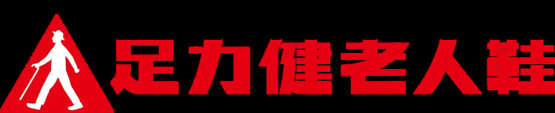
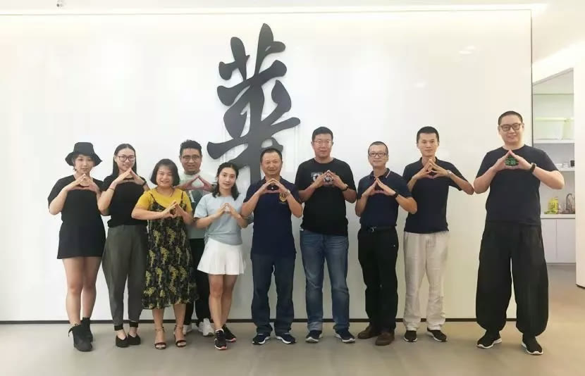
▲足力健老人鞋形象代言人 张凯丽
▲足力健老人鞋全球产业链发布会，与会各方比出超级手势
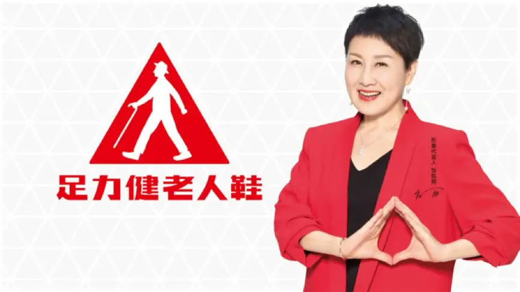
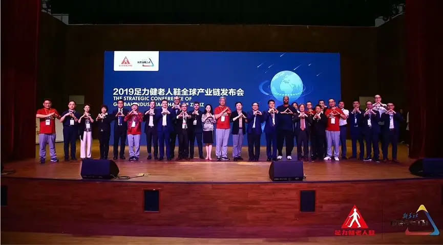
超级符号一经确定，就被导入全国几千家门店，你可以在中国许多城市的街道上，看到这样一家门头醒目的鞋店。白天，它的视觉效果极其吸睛，入夜，它的灯光也是一枝独秀。
▲足力健老人鞋新店白天效果
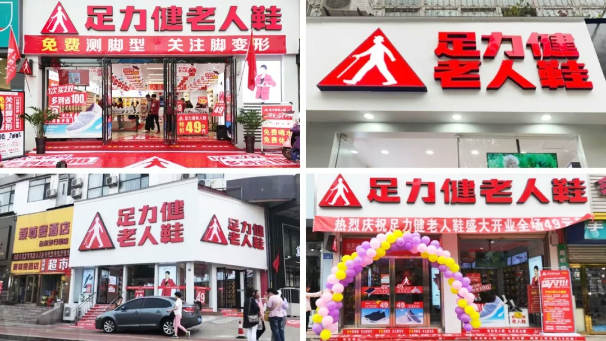
▲足力健老人鞋新店夜晚效果
④门头设计 要放大撑满在门头的设计应用上，我们遵循货架思维的原则：所有品牌信息出现的地方，都是货架。商场、媒体、电商页面，乃至消费者的生活空间也是货架。门头出现的街道就是我们的货架：为了在街道这个货架上脱颖而出，要有“去标准化”的思维，我们把原先的单层字改成双层排列的方法，放大撑满，在街道上获得最大的陈列优势。不要留白要留人：很多艺术创作讲究“留白”，但在门头这个商业设计上，整条街道甚至整个天空都是你的“留白”，所以要尽可能做到“放大撑满”，最大化地露出品牌，这样才能吸引更多顾客，留住更多人。
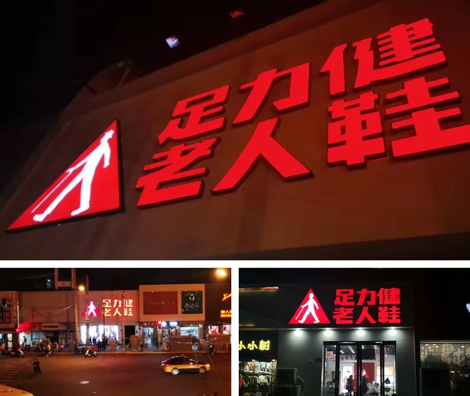
2 ）营销日历年年干 品牌活动是资产我们以季节性营销活动主题，形成品牌一年的营销日历。这就是华与华的年度营销传播活动方法。营销日历年年要做，年年同一时间做，“驯养”消费者，培养消费习惯。①华与华协助制定了足力健一整年的营销日历。以“母亲节”、“父亲节”、“重阳节”和“春节” 4 大节日为核心，用 4 场活动，引爆销售。
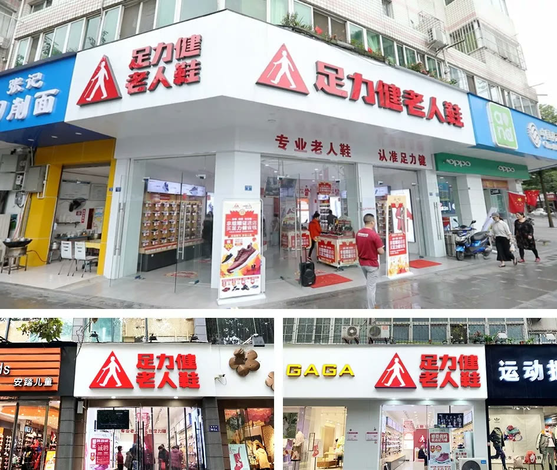
②品牌不仅是商业思想，更是一种文化现象。在这 4 大活动中，最重大的是重阳节品牌活动——“过重阳节，穿老人鞋”。在重阳节这样一个具有上千年文化母体的节日中，我们设计了一系列活动，让消费者感受到品牌关爱。
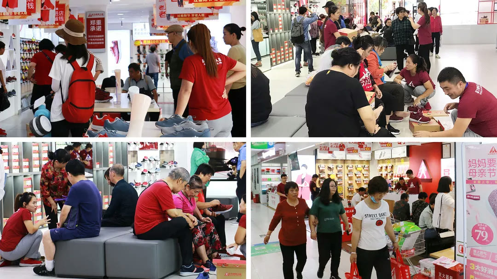
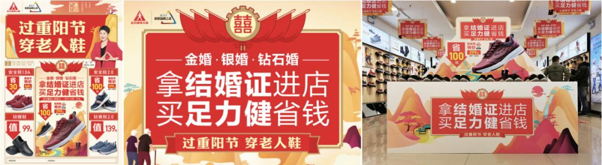
创意购买理由：“拿结婚证进店，买足力健省钱”。我们希望消费者能够在这样一个有意义的节日中，拿上结婚证这样一个极具仪式感的道具，和老伴一起到店，一方面享受优惠福利，另一方面纪念两人的美好婚姻。这也是在创造老年人的流行，这场活动成为了足力健最重要的品牌资产之一。
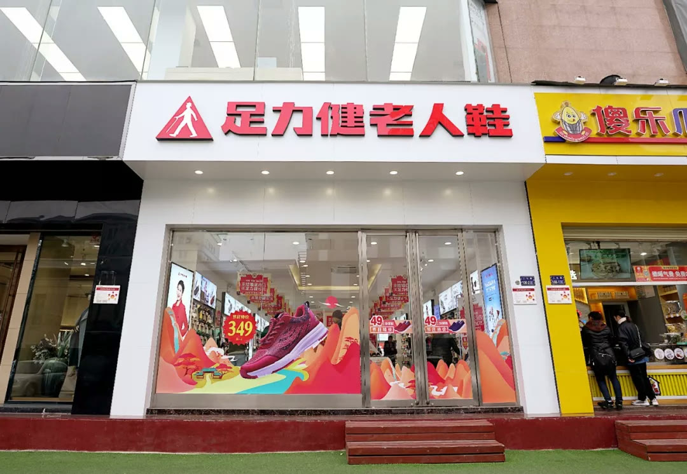
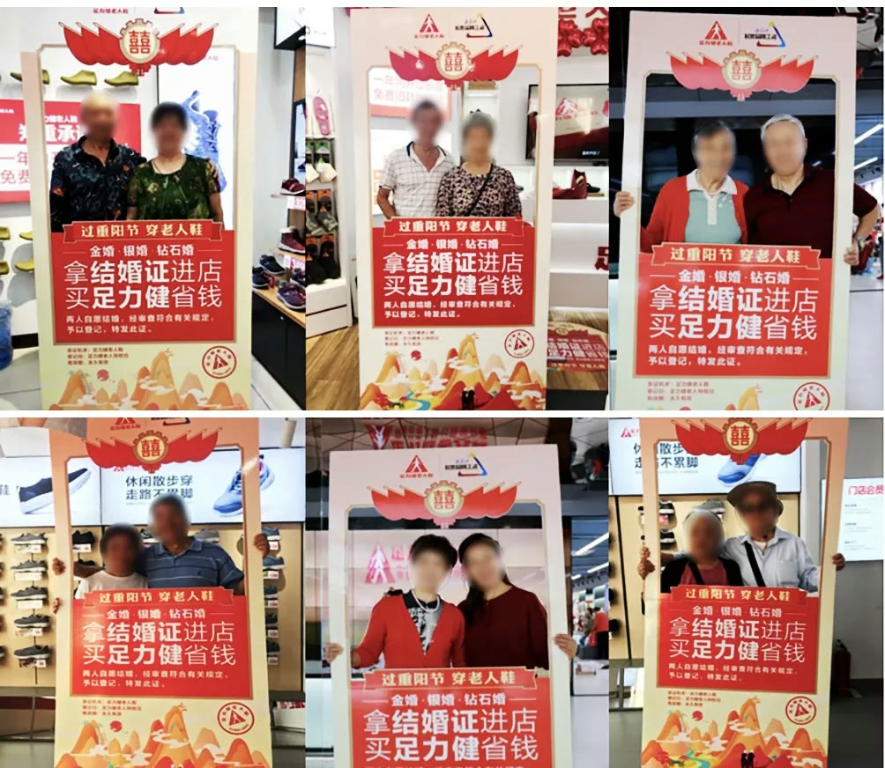
在重阳节活动中，我们收集到了无数的结婚证，从 50 年代到 90 年代，每一本都在见证一个时代。
3重新想象战略企业战略是动态的企业战略是动态的，战略制定之后管多久呢？——管到制定下一个战略为止。2019 年，中央电视台《对话》栏目主动邀请张京康，希望足力健以养老制造产业代表企业的身份，做客节目，分享企业和品牌故事。
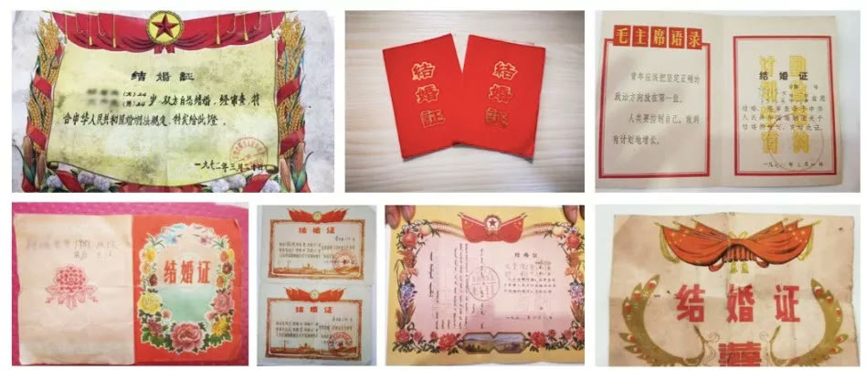
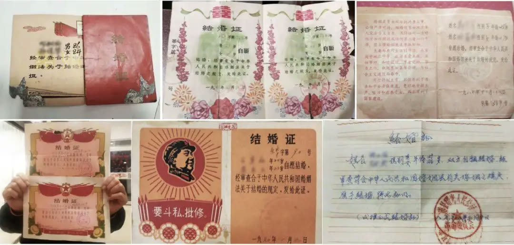
这之后，足力健和华与华团队探讨足力健未来的企业战略，双方达成一个重大判断：足力健要进军老年产业！根据国家统计局发布的统计数据， 2017 年末，我国 60 周岁及以上人口约 2 . 4 亿，占总人口的 17 . 3 %，老龄化速度在不断加快！在整个老龄化社会的大背景下，老年产业势必成为新兴的朝阳产业。而足力健拥有与生俱来的企业基因和资源禀赋，有机会成为老年产业当中的龙头企业！战略就是下围棋，金角银边草肚皮！在站稳了“老人鞋”这个品类之后，依托足力健现有的大平台，未来的足力健可以围绕老人的生活场景，衍生到老人科技领域和老人服务领域。相应的，华与华提出未来足力健的企业经营使命：“让每一位老人都过上健康、快乐的老年生活。”我们要始终做到全心全意为老人服务。这里，我们引入企业的五个市场理论模型。
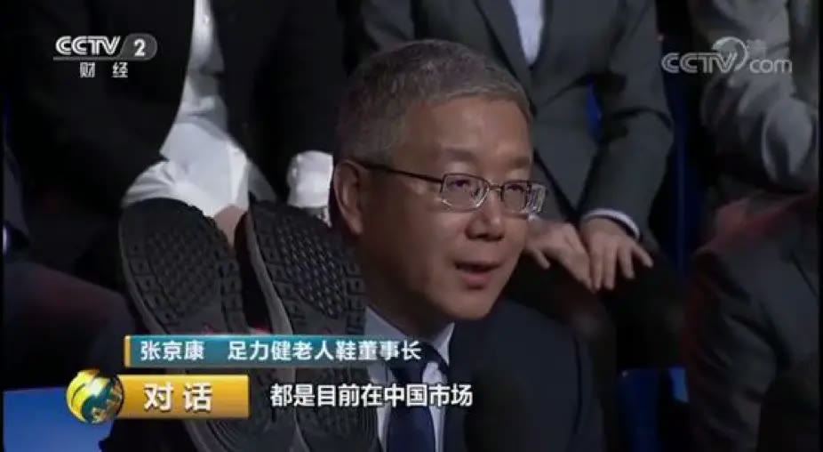
五个市场：顾客市场、人才市场、资本市场、政策市场、公民社会。①政策市场。我们能够得到各级政府，各国政府和议会的欢迎和支持，甚至能推动制定我们认为符合全社会利益，又能推动本行业发展的政策和法规的制定。因为足力健从事的老年事业，也是每个国家和社会必须面对的事业，值得他们这么做。②公民社会。我们是造福一方百姓，推动社会进步的力量，无论是面对企业所在地原住民，各种团体，媒体，公众，我们都能我心光明，充满正能量。因为足力健的事业，对于推动社会进步，具有巨大的意义。本次《对话》栏目主动邀请足力健，正是媒体对我们事业的关注！③顾客市场。没有顾客，就没有企业。德鲁克说，经营的任务就是创造顾客。未来足力健的顾客会覆盖到全球老人，产品和服务将涉及到他们生活的方方面面。④人才市场。员工是内部顾客，我们要吸引人才，乐意来我们公司工作，又要让每个人都能在这里尽性发挥，不仅创造事业成就，而且实现人生目标和美好生活。
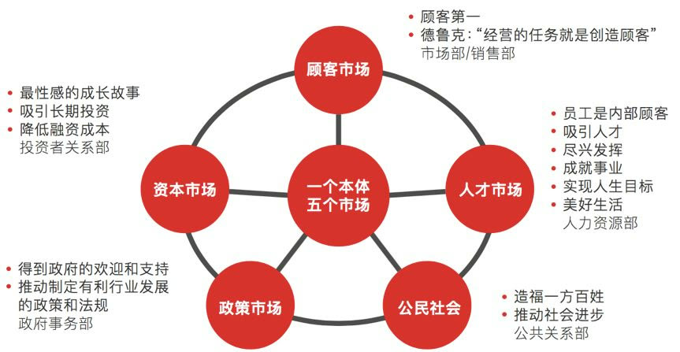
现在的足力健吸引的是主要是鞋业人才，未来将会面向整个老年产业和科技领域的人才。⑤资本市场。我们是最性感的成长故事，足以吸引长期的投资，而且融资成本要低。足力健致力于解决的社会问题，是一个永恒的社会问题，只要人类还存在，这个社会问题就无法完全消除，老人的需求也就会一直存在。
本文总结1 、企业战略不是企业的战略，而是企业为解决某一社会问题，为社会制定的战略。① 发现社会问题。足力健发现了“老年人的穿鞋”的社会问题。② 选择、承担解决某一社会问题的责任，并将之作为企业的经营使命。足力健将“让每一位老人都穿上专业老人鞋”作为自己的经营使命。③ 使命决定战略。足力健一切的运营活动和所有的产品结构、业务组合，都是围绕解决这个社会问题而展开。2 、战略定位的实质是选择一套与竞争对手不同的经营活动，以创造差异化的价值。它能带来 3 个结果：①独特的价值。足力健是专业的老人鞋，具有独一无二的产品价值。② 总成本领先。足力健走自主投产、款少量多的模式，实现总成本领先。③ 竞争对手难以模仿。足力健通过一套独特的运营活动所建立起来的战略定位，其整体性竞争优势是其他品牌无法模仿和超越的。3 、企业战略是动态的，管到下一个战略制定为止。未来足力健的战略，是要进军老年产业。